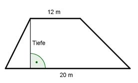

Aufgabe 27 Ein trapezförmiges Grundstück hat eine Fläche von 400 m2. Die parallelen Seiten sind zur Straße 20 m zum Garten 12 m lang. Wie tief ist das Grundstück?  a = 20 m c = 12 m Tiefe = h m a + c A = ------- * h |*2 2 2 * A = (a + c) * h |:(a + c) 2 * A 2 * 400 m2 h = -------- = --------------- = 25 m a + c 20 m + 12 m